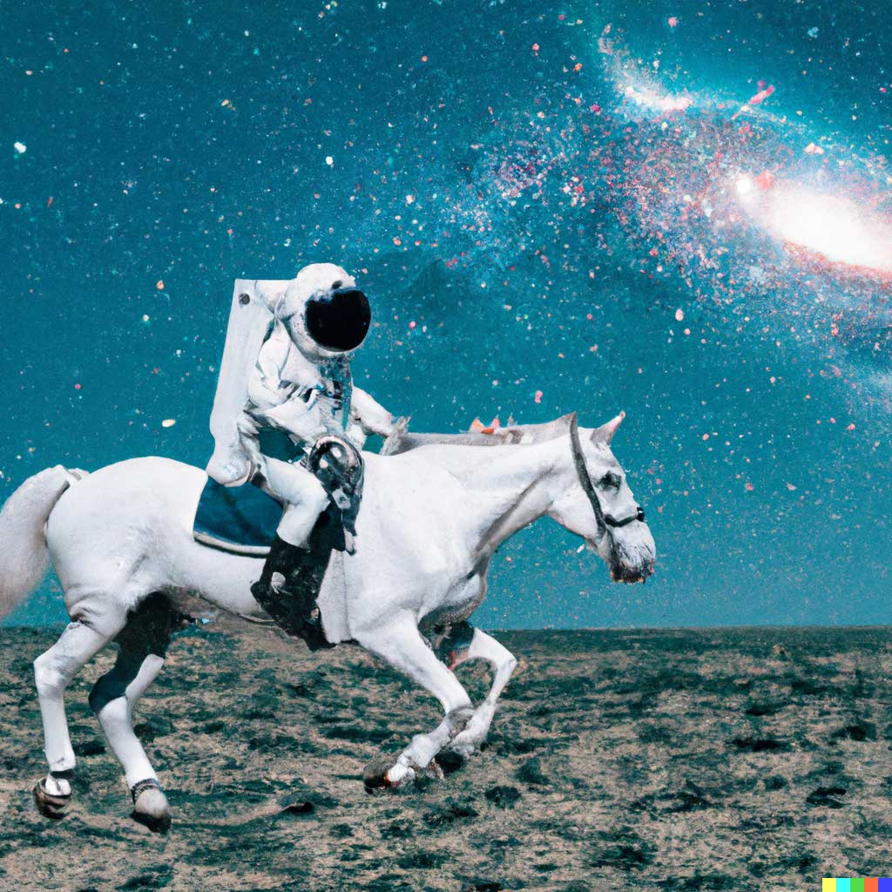

input
An astronaut riding a horse in photorealistic style.
Output

In January 2021, OpenAI introduced DALL·E.
One year later, our newest system, DALL·E 2, generates
more realistic and accurate images with 4x greater resolution.
DALL·E 2 is preferred over DALL·E 1 when evaluators compared each model.
1071.7%
preferred for caption matching
88.8%
preferred for photorealism
Related Search
Hierarchical text-conditional image generation with CLIP latents
Apr 13, 2022DALL·E: Creating images from text
Jan 5, 2021DALL·E 2 pre-training mitigations
Jun 28, 2022CLIP: Connecting text and images
Jan 5, 2021
A focus on Safety
DALL·E 2 began as a research project and is now available in beta. Safety mitigations we have developed and continue to improve upon include:
Preventing harmful generations
We’ve limited the ability for DAL.
']
Preventing harmful generations
We’ve limited the ability for DALL·E 2 to generate violent, hate, or adult images. By removing the most explicit content from the training data, we minimized DALL·E 2’s exposure to these concepts. We also used advanced techniques to prevent photorealistic generations of real individuals’ faces, including those of public figures.
Curbing misuse
Learning from real-world use is an important part of developing and deploying AI responsibly. We began by previewing DALL·E 2 to a limited number of trusted users. As we learned more about the technology’s capabilities and limitations, and gained confidence in our safety systems, we slowly added more users and made DALL·E available in beta in July 2022.
Our hope is that DALL·E 2 will empower people to express themselves creatively. DALL·E 2 also helps us understand how advanced AI systems see and understand our world, which is critical to our mission of creating AI that benefits humanity.
Credits
Research Advancements
Aditya Ramesh, Prafulla Dhariwal, Alex Nichol, Casey Chu, Mark Chen
Engineering, Design, Product, and Prototyping
Jeff Belgum, Dave Cummings, Jonathan Gordon, Chris Hallacy, Shawn Jain, Joanne Jang, Fraser Kelton, Vishal Kuo, Joel Lehman, Rachel Lim, Bianca Martin, Evan Morikawa, Rajeev Nayak, Glenn Powell, Krijn Rijshouwer, David Schnurr, Maddie Simens, Kenneth Stanley, Felipe Such, Chelsea Voss, Justin Jay Wang
Comms, Policy, Legal, Ops, Safety, and Security
Steven Adler, Lama Ahmad, Miles Brundage, Kevin Button, Che Chang, Fotis Chantzis, Derek Chen, Frances Choi, Steve Dowling, Elie Georges, Shino Jomoto, Aris Konstantinidis, Gretchen Krueger, Andrew Mayne, Pamela Mishkin, Bob Rotsted, Natalie Summers, Dave Willner, Hannah Wong
Acknowledgments
Thanks to those who helped with and provided feedback on this release: Sandhini Agarwal, Sam Altman, Chester Cho, Peter Hoeschele, Jacob Jackson, Jong Wook Kim, Matt Knight, Jason Kwon, Anna Makanju, Katie Mayer, Bob McGrew, Luke Miller, Mira Murati, Adam Nace, Hyeonwoo Noh, Cullen O’Keefe, Long Ouyang, Michael Petrov, Henrique Ponde de Oliveira Pinto, Alec Radford, Girish Sastry, Pranav Shyam, Aravind Srinivas, Ilya Sutskever, Preston Tuggle, Arun Vijayvergiya, Peter Welinder